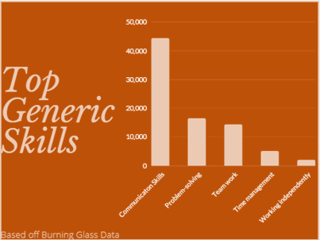

Industry Data
Our group’s required IT-specific skill set: Experience writing code in C#, SQL, JavaScript, Python, graphical design and.NET programming. Our group’s required general skill set: The ability to work in a team and independently, problem-solving, communication, time management and ability to meet deadlines. (Based on the Burning Glass data that looked at 120,353 IT job postings from March 24, 2017, until March 23, 2018.)
Jesse Corlet - Machine Learning Engineer
Skill set: Understanding machine learning and deep learning algorithms, using tools like PyTorch and TensorFlow and a popular IDE called Jupyter Notebook, problem-solving and the ability to work in a team and independently.
Sam Keartland - Senior Full Stack developer
Skill set: Experience using C#, experience with SQL database, Entity Framework and other .Net ORMs, experience in Azure/ AWS and experience using TypeScript, React, Redux/GraphQL with server/API driven applications.
Michael Pattie - Cloud Engineer
Skill set: Certifications from the 3 major cloud providers, skills in coding languages, be able to work in a team, understanding Virtual Machines and automating processes.
Alana Spicer - 3D artist (Graphic Designer)
Skill set: : software such as Adobe Photoshop, 3D Max, computer skills, art and creativity, ability to work in a team and individually, good time management and good communication.
Samantha Watts - Software Engineer
Skill set: Communication and problem-solving skills, ability to work in a team and independently, Ruby on Rails, API development skills, database and JavaScript, HTML and CSS.

How do the IT-specific skills in your required skill set rank in terms of demand from employers?
1. SQL
2. JavaScript
3. Graphic Design
4. C#
5. .NET programming
6. Python

How do the general skills in your required skill set rank in terms of demand from employers?
1. Communication skills
2. Problem-solving
3. Working in a team
4. Time-management
5. Working independently

What are the three highest ranked IT-specific skills which are not in your required skill set?
1. Java
2. Project Management
3. SAP
What are three highest ranked general skills which are not in your required skill set?
1. Organisational skills
2. Writing
3. Troubleshooting
Having looked at the Burning Glass data, has your opinion of your ideal job changed? Why or why not?
Jesse Corlet
The Burning Glass data was very informative in general, but it did not present much data relating to my ideal job, although I found it interesting that skills like SQL and Java Script are some of the most in-demand skills. I assumed that these skills were so popular that the demand would be diluted by the number of people that possess these skills. Regardless my interest in machine learning doesn’t come from demand in the workplace, so my opinion on the ideal job has not changed.
Sam Keartland
I found the data quite useless for myself as I already know I want to do full stack development/software engineering, and both are in relatively high demand. I am also fully aware that communication plays a huge role in any IT position, or any job for that matter. It was nice seeing the most in-demand programming languages ranked though.
Michael Pattie
Looking at the burning glass data my ideal job idea hasn’t changed, the skills in demand are those required to be Cloud engineer/solutions architect. As expected, it is an extremely in demand job with coding at the top of the list of desirable skills. Due to the way in which the IT industry is heading I still believe this to be a great area to pursue.
Alana Spicer
Based on Jesse Corlet research on industry data research and having looked at burning glass my opinion of my ideal job has not changed. Although I think I am not creative enough I am sure this can come with practice in the industry . I feel the same as Jesse, my interest in graphic design does not come from the demand in the workplace it comes with interest in the field of work. Some financial benefit also interests me also.
Samantha Watts
Based on the information I have reviewed from the Burning Glass Data my interest and opinions of my ideal job has remained unchanged. I am always prepared to tackle new ideas and give projects 110 per cent so I found it very exciting and interesting to see that SQL and Java (two areas I am interested in exploring) are among the most in-demand skills. It was interesting that even in today’s environment independent work is of such less importance than teamwork or even time management as I would have expected that working independently and having exceptional time management skills would have been more evenly distributed in demand. There is always a demand for software engineers, therefore my career path preference is unchanged.